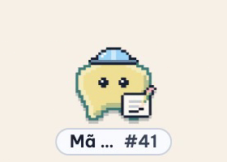
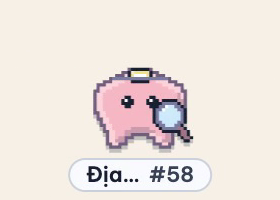
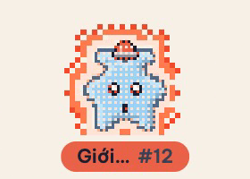

Bobix
thú cưng pixel cho Claude Code
Mỗi phiên Claude Code là một chú thú pixel trên màn hình.
Bước 1: tải file cài cho máy bạn: Mac, Windows hoặc Linux.
Mở app. Bobix nằm trên thanh menu (Windows: khay hệ thống).
Bước 2: mở Bobix → tab Kết nối → bấm Cài hooks.
Đã kết nối. Gửi một prompt trong Claude Code là thú cưng hiện ra.
Thú cưng đi dọc mép màn hình
Mỗi phiên một chú thú. Bấm vào là mở đúng phiên đó.
Viền cam, nhãn đỏ: Claude đang chờ bạn duyệt.
Làm xong: nhận XP, đội vương miện, phất cờ.
Trang phục theo trạng thái

Đang sửa fileĐang chạy lệnh

Đang đọc, tìm
Chờ bạn duyệtXong việc
Đang ngủ
Nhìn trang phục là biết phiên đang làm gì.
Bảng: việc cần bạn duyệt, việc đang làm, việc hôm nay.
Skill: vai trò của bạn và skill của từng dự án.
Cài đặt: chỗ thú cưng đi, kiểu hiện, cỡ, Đừng làm phiền…
Thông báo và duyệt nhanh
Bobix báo khi phiên cần duyệt hoặc làm xong.
Bobix
v0.2.0-rc.4 · macOS · Windows · Linux
github.com/baonguyen-agilityio/bobix
Chạy trên máy bạn, không gửi gì ra ngoài.